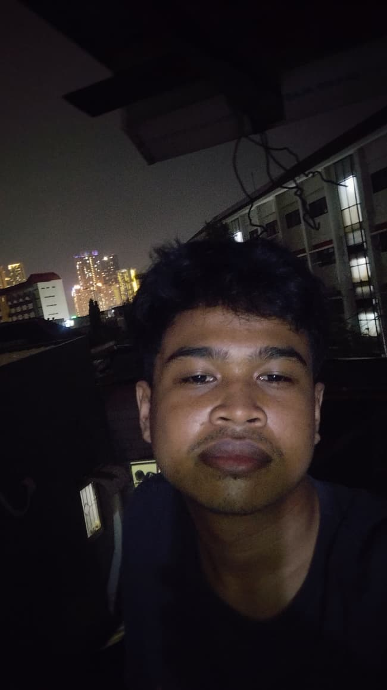

--:--
About Us
Urban Legend Indonesia adalah ruang kecil untuk mengumpulkan cerita-cerita misterius yang hidup di tengah masyarakat.
Website ini dibuat sebagai arsip sederhana untuk menjaga cerita, mitos, dan legenda agar tidak hilang ditelan waktu.
Di balik halaman ini, ada satu orang yang menyukai cerita gelap, keheningan, dan rasa penasaran.
Yaitu saya, Bagas Wahyu Syahputra.